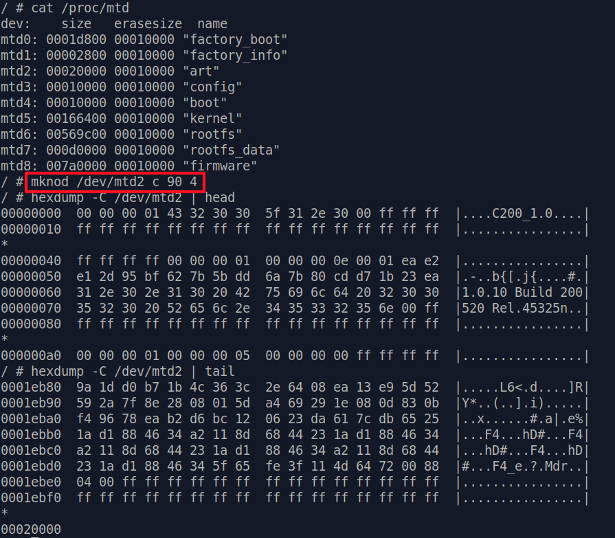

Enable Telnet Shell
WARNING: Operations shown here can potentially brick your device if not followed correctly, proceed at your own risk!
We've already got a shell by using the U-boot bootargs trick. However the shell we have access to is not under the runtime environment of a C200 which booted normally.
When
analyzing a device, some information can be extremely helpful. For example :
- What processes are running? What's the options passed to a binary when it was executed? These can be answered by
ps. - What network ports are open? What processes are listening to them? What connections are made? These can be answered by
netstat. - What drivers/modules are loaded?
lsmodcan tell us. - Are there any data or keys generated only on boot?
- .........
The list goes on and on, and different devices will have different questions to be asked.
However, the system state when we get a shell through U-boot greatly restricted the information we can gather, and what we can do on the
device [*].
So, having access to a shell during runtime (and remotely) is the best thing a
pentester can wish for.
Hunt for Vulnerability
We can easily find that there is telnetd in the firmware, so the only thing we need to do is find a vulnerability to execute it.
Luckily there is a command injection vulnerability we identified in /bin/tp_manage. The guilty function is located at address 0x40a4c8 :
Here, the program first decompressed a file
called isp_config.bin , then tries to read product_id from /tmp/base-files/etc/config.ini
If
it successfully reads a product id, it will finally call system() (FUN_0040c240) and execute command uci set device_info.info.product_id=%s with
product id passed to the format string without sanitizing or checks.
So, if we can manipulate product_id passed to the format string, then in theory
we should be able to run any command we want!
{kind=link}
Where Is Isp_config.bin ?
We now know product_id is read from /tmp/base-files/etc/config.ini, and this file is decompressed
from isp_config.bin .
However we can't find this isp_config.bin anywhere in the firmware
file or flash dump!
This indicates that isp_config.bin is created at runtime. Now our priority is to find how it was created.
It turns out Ghidra
decompiler is making things look more complicated than they really are. Right in the same function, there is the following code:
First
it reads 0x100 (256) bytes from flash address 0x20000 and stores the data in
lvar4 .
Then there's a while loop, reading 0x10000 (65536) bytes from flash at each iteration, starting at address 0x20100.
Finally,
after checking some md5 value, the data is written to /tmp/isp_config.bin .
{kind=link}
Analyze "art" Partition
What deduction can be drawn from the code above ?
- Address
0x20000of flash isartpartition, according to the bootlog - First
0x100bytes ofartmay be some kind of header or meta data. - The meta data contains md5 hash, which is used to verify md5 hash of the data read starting from flash address
0x20100.
Having the above deduction in mind, we can start by dumping art partition to a file:
Using
binwalk to analyze art.bin we just dumped, we can see there's actually a gzip compressed
file locating at offset 0x100 :
base-files/etc/config.ini can then be found after we extract the compressed data :
{kind=link}
{kind=link}
Edit and Repack
Now we've found our place to put the command we want to execute, let's do that right now:
By
adding ;telnetd -l /bin/sh after the original product id, a telnetd without login
prompt will be launched when this modified string is read by /bin/tp_manage and passed to command uci set device_info.info.product_id=%s .
What's left for us to do might sound as simple as reverse what we did till now - compress these files and write it back to flash.
However let's not forget there is a md5 check for the compress data.
And by adding our command in product_id, the md5 sum of our compressed data won't be the same with what's originally in art partition
meta data!
Just writing this into flash chip recklessly may result in bricking our C200, nobody wants this to happen.
We will first have to figure out where the md5 hash resides in the 0x100 bytes
of meta data/header.
Let's take a look at the meta data in hex dump :
At
first sight, it surely looks like a mess. The only easy things that can be spotted are the product name C200_1.0 and the firmware version
1.0.10 Build 200520 Rel.45325n.
However some deeper inspection allows us to identify two important information in this mess [*]:
We
can confirm this by using dd to extract 0x0001eab7 (125,623) bytes starting
from offset 0x100, and check its md5sum:
Amazing,
right ? 😉
{kind=link}
{kind=link}
{kind=link}
{kind=link}
Edit and Repack - Part 2
The important meta data are identified, now let's make our customized art.bin partition data.
We'll
need to re-compress all the data with our telnetd payload inside, then calculate its md5sum and file size :
Repacking
is a little more complicated, but hang in there with us:
Click here far larger image
Here
we used dd to extract data portion from the beginning to offset 0x4c as part1, and data
portion from
offset 0x4c to offset 0x100 as part2.
After that, we can
use cat and echo to append part1, file size ( 0x001eb62 ),
md5 value and part2 together. This will complete the modification of partition meta data.
Next, append the whole backdoored gzip file to arttelnetd.bin :
After making sure our gzip file (with file
signature 0x1f8b08 ) landed at the correct offset, we see that arttelnetd.bin is now
126,050 bytes large.
However art partition has to be exactly 0x20000 (131,072)
bytes large, as defined in C200's flash partition table [*], so the last thing we need to do is put some padding of 0xff at the end of arttelnetd.bin and
make it exactly 131,072 bytes large.
In
our case we need to put 5022 bytes of padding, so our command will be as follows:for i in {1..5022}; do echo -ne "\xff" >> arttelnetd.bin; done
Check
the file size of arttelnetd.bin one last time. If it's 131,072 , then we finally
made our customized version of art partition! 🥳🥳
{kind=link}
{kind=link}
{kind=link}
Writing Our Customized Data Into Flash
WARNING: Operations shown here can potentially brick your device if not followed correctly, proceed at your own risk!
Our backdoored art partition is ready, only thing left is to write it into the flash chip.
There's a binary called mtd conveniently
built in C200 that serves exactly this purpose:
mtd only deal with mtdX virtual devices, not mtdblockX . So we'll have
to use mknod to create a node for art partition, which is /dev/mtd2.

Here we also checked the head and tail
of /dev/mtd2, just to make sure it really is accessing the part of flash chip we wish to modify.
If everything went well, let's put our customized
arttelnetd.bin into SD card and insert it into C200:
arttelnetd.bin - check ✅/dev/mtd2 - check ✅
Finally, it's time to really write our backdoored partition into flash:
Just like that, our backdoored
partition is written into flash.
Now, reboot your C200 and hope for the best enjoy your runtime telnet root shell!
{kind=link}
{kind=link}
{kind=link}
{kind=link}
{kind=link}